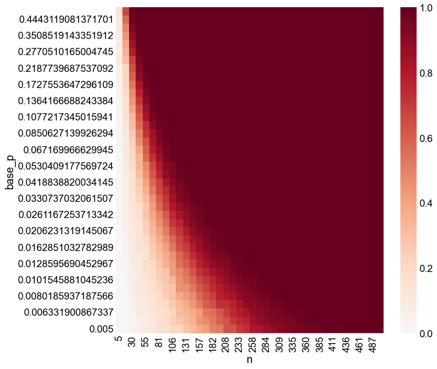

Show code cell source
import datetime
import time
import matplotlib.pyplot as plt
import numpy as np
import pandas as pd
import seaborn as sns
from matplotlib.ticker import ScalarFormatter
from pkg.io import FIG_PATH, OUT_PATH, get_environment_variables
from pkg.io import glue as default_glue
from pkg.io import savefig
from pkg.plot import set_theme
from pkg.stats import binom_2samp
from scipy.interpolate import RegularGridInterpolator, interp1d
from scipy.stats import binom
from tqdm.autonotebook import tqdm
_, RERUN_SIMS, DISPLAY_FIGS = get_environment_variables()
FILENAME = "single_subgraph_power"
FIG_PATH = FIG_PATH / FILENAME
def glue(name, var, **kwargs):
default_glue(name, var, FILENAME, **kwargs)
def gluefig(name, fig, **kwargs):
savefig(name, foldername=FILENAME, **kwargs)
glue(name, fig, figure=True)
if not DISPLAY_FIGS:
plt.close()
t0 = time.time()
set_theme()
rng = np.random.default_rng(8888)
Environment variables:
RESAVE_DATA: True
RERUN_SIMS: False
DISPLAY_FIGS: False
Show code cell source
n_nodes_range = np.linspace(5, 500, 40, dtype=int)
print(n_nodes_range)
base_p_range = np.geomspace(0.005, 0.5, 40)
print(base_p_range)
n_sims = 1000
effect_scale = 0.8
method = "score"
[ 5 17 30 43 55 68 81 93 106 119 131 144 157 170 182 195 208 220
233 246 258 271 284 296 309 322 335 347 360 373 385 398 411 423 436 449
461 474 487 500]
[0.005 0.00562668 0.0063319 0.00712551 0.00801859 0.00902361
0.01015459 0.01142732 0.01285957 0.01447133 0.0162851 0.01832621
0.02062313 0.02320794 0.02611673 0.02939008 0.0330737 0.03721902
0.04188388 0.04713342 0.05304092 0.05968883 0.06716997 0.07558875
0.08506271 0.0957241 0.10772173 0.1212231 0.13641667 0.15351453
0.17275536 0.19440776 0.21877397 0.24619413 0.27705102 0.31177537
0.35085191 0.39482614 0.44431191 0.5 ]
Show code cell source
if RERUN_SIMS:
pbar = tqdm(total=len(n_nodes_range) * len(base_p_range) * n_sims)
rows = []
for n in n_nodes_range:
for base_p in base_p_range:
for sim in range(n_sims):
# would be n*(n-1) if we didn't count self-edges for an induced subgraph
# trying to keep things general here
possible_edges = n**2
edges1 = binom.rvs(possible_edges, base_p, random_state=rng)
edges2 = binom.rvs(
possible_edges, effect_scale * base_p, random_state=rng
)
stat, pvalue = binom_2samp(
edges1, possible_edges, edges2, possible_edges, method=method
)
rows.append(
{
"n": n,
"base_p": base_p,
"sim": sim,
"stat": stat,
"pvalue": pvalue,
}
)
pbar.update(1)
pbar.close()
results = pd.DataFrame(rows)
results.to_csv(OUT_PATH / FILENAME / "sim_results.csv")
else:
results = pd.read_csv(OUT_PATH / FILENAME / "sim_results.csv", index_col=0)
Show code cell source
def compute_power(pvalues, alpha=0.05):
return np.mean(pvalues < alpha)
power_results = (
results.groupby(["n", "base_p"])["pvalue"]
.apply(compute_power)
.rename("power")
.reset_index()
)
square_power = power_results.pivot(index="base_p", columns="n", values="power")
fig, ax = plt.subplots(1, 1, figsize=(10, 10))
sns.heatmap(square_power, ax=ax, cmap="RdBu_r", center=0, vmin=0, vmax=1)
ax.invert_yaxis()

Show code cell source
cols = square_power.columns.values
rows = square_power.index.values
values = square_power.values
interpolator = RegularGridInterpolator((rows, cols), values, bounds_error=True)
new_row_range = np.geomspace(0.005, 0.5, 400)
new_col_range = np.linspace(5, 500, 400)
rows, cols = np.meshgrid(new_row_range, new_col_range, indexing="ij")
zs = interpolator((rows, cols))
interp_df = pd.DataFrame(data=zs, index=new_row_range, columns=new_col_range)
fig, ax = plt.subplots(1, 1, figsize=(10, 10))
sns.heatmap(interp_df, cmap="RdBu_r", center=0, vmin=0, vmax=1)
<AxesSubplot:>
Show code cell source
set_theme(tick_size=5)
df = interp_df
levels = [0.25, 0.5, 0.9]
fig, ax = plt.subplots(1, 1, figsize=(10, 10))
sns.heatmap(
df,
cmap="RdBu_r",
center=0,
vmin=0,
vmax=1,
square=True,
cbar_kws=dict(shrink=0.6, pad=0.1),
)
ax.invert_yaxis()
cs = plt.contour(zs, levels=levels, colors="black")
ax.clabel(cs, cs.levels, manual=[(0, 100), (100, 90), (463, 370)], colors="black")
iloc_to_x_value = interp1d(
np.arange(0, df.shape[1]) + 0.5,
df.columns.values,
kind="linear",
bounds_error=False,
fill_value=(df.columns.values.min(), df.columns.values.max()),
)
x_value_to_iloc = interp1d(
df.columns.values,
np.arange(0, df.shape[1]) + 0.5,
kind="linear",
bounds_error=False,
fill_value=(0.5, df.shape[1] - 0.5),
)
iloc_to_y_value = interp1d(
np.arange(0, df.shape[0]) + 0.5,
df.index.values,
kind="linear",
bounds_error=False,
fill_value=(df.index.values.min(), df.index.values.max()),
)
y_value_to_iloc = interp1d(
df.index.values,
np.arange(0, df.shape[0]) + 0.5,
kind="linear",
bounds_error=False,
fill_value=(-10, df.shape[0] + 10), # not sure what these should be
)
ax.set(xticks=[], yticks=[], xlabel="", ylabel="")
xax2 = ax.secondary_xaxis(0, functions=(iloc_to_x_value, x_value_to_iloc))
xax2.set_xticks([5, 125, 250, 375, 500])
yax2 = ax.secondary_yaxis(0, functions=(iloc_to_y_value, y_value_to_iloc))
yax2.set_yscale("log")
yax2.set_yticks([0.005, 0.01, 0.05, 0.1, 0.5])
yax2.get_yaxis().set_major_formatter(ScalarFormatter())
yax2.set_ylim(0.005, 0.5)
cax = fig.get_axes()[1]
cax.set_title("Power @\n" + r"$\alpha=0.05$", pad=20)
yax2.set_ylabel("Base connection probability")
xax2.set_xlabel("Number of nodes")
gluefig("power_heatmap_contours", fig)
Show code cell source
elapsed = time.time() - t0
delta = datetime.timedelta(seconds=elapsed)
print(f"Script took {delta}")
print(f"Completed at {datetime.datetime.now()}")
Script took 0:00:32.683195
Completed at 2023-03-08 12:47:09.276544